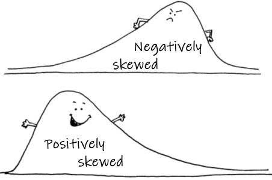

Transforming variables

Distributions and transformations of variables
Why transform and/or standardise?
- For graphical representation, to spread the variable(s) over a reasonable range so that trends, distributions etc. are easier to visualize
- Many classical statistical methods assume normally distributed variables (ANOVA, correlation, regression)
- To obtain homoscedastic variables (homogeneity of variance), another assumption of ANOVA and regression
- For multivariate analysis, variables may be measured on different scales, and standardisation gives each variable equal weight in the analysis (e.g., Principal Components Analysis – PCA)
In case you need to read in the data again...
hubbard <- read.csv("hubbard.csv", stringsAsFactors = TRUE)Visualizing distributions
We can use histograms, density plots, or Q-Q plots; probably histograms are easiest to interpret.
Histograms and density plots
Histograms plot the frequency (i.e. number) of values of a
variable which fall into a set of ranges (we use the R
function hist() to draw histograms). The frequency values
are represented as vertical bars, which have width equal to the range of
each 'slice' of the overall range (the slices are usually evenly
spaced). Instead of frequency, density can be plotted for each
range slice using the argument freq=FALSE in the
hist() function; density is essentially the relative
frequency.
Density plots are a smooth curve of relative frequency vs. variable value, and show a 'shape' for the distribution similar to that implied by the histogram. Examples of both the histogram (plotted as density rather than frequency) and an overplotted density curve are shown in Figure 1.
with(hubbard, hist(log10(Cd), breaks=15, freq=FALSE, col="#e0e0ff", main=""))
lines(density(na.omit(log10(hubbard$Cd))), col="#8080c0", lwd=3)Figure 1: Histogram of Cd (cadmium) concentrations in the Hubbard Brook Experimental Forest, with superimposed density plot. Cd concentrations are log10-transformed to address skewness.
The histogram for Cd (cadmium) in the Hubbard Brook soil dataset shows a distribution that does not resemble a normal distribution.
NOTE: It's worth looking at log-transformed histograms since bimodal or multi-modal distributions may be easier to see. From the histograms we can see if (1) the variable is skewed (and therefore probably not normally distributed), or (2) if the distribution appears to be bimodal or multi-modal.
Q-Q- plots
A Q-Q-plot or normal quantile plot is a plot of all the values in a variable in ascending order, with the axes transformed in such a way that a perfectly normally distributed variable would plot on a straight line. Deviations of the actual points from the theoretical straight line show that where the distribution of the plotted variable differs from a normal distribution (as in the examples in Figure 2 below),
par(mfrow=c(1,2)) # set up graphics parameters to show 2 plots side-by-side
require(car) # the qqPlot() function in car is better than base-R qqplot()
with(hubbard, qqPlot(Al))## [1] 81 94with(hubbard, qqPlot(log10(Al))) # not perfect but better than untransformedFigure 2: Histogram of Cd concentrations in the Hubbard Brook Experimental Forest, with superimposed density plot. Cd concentrations are log10-transformed to address skewness.
## [1] 121 81
Perhaps you noticed output like [1] 81 94 and
[1] 121 81 above? These are the row numbers (in the data
frame) of observations with the most unusual values compared with a
normal distribution. The same row numbers are also shown on the QQ-plots
in Figure 2 next to the relevant points.
Which transformation?
| Nature of variable(s) | Transformation | R expression |
| Measurements (lengths, weights, etc.) |
natural log (loge) log base 10 (log10) Power functions , e.g., x−½ |
log(x)log(x,10) or
log10(x)x^-0.5
|
|
Use algorithm for Box-Cox transformation to estimate the power function
term most likely to result in a normally distributed variable |
powerTransform(x)
|
|
| Proportions (e.g. percentages) | Logit |
log(x/(1-x))
|
| Counts (numbers of individuals) | square root |
sqrt(x)
|
| To standardise data (mean = 0, standard deviation = 1) | — |
scale(x)
|
(x is your variable name)
Power transformation
Sometimes a log transformation will not give our variable(s) a normal
distribution. If so, we can try a power transformation. To do
this though, we need to know what power to raise our variable to! There
is an algorithm called 'Box-Cox' which can estimate the
power term. It's the basis of the powerTransform() function
in the car R package.
powerTransform(hubbard$OM.pct)## Estimated transformation parameter
## hubbard$OM.pct
## 0.0124845hist(hubbard$OM.pct, breaks=15, main = "Untransformed OM (%)")
hist(hubbard$OM.pct^0.0125, breaks=15, main = "Power-transformed OM (%)")Figure 3: Histograms of untransformed OM (organic matter) concentrations (left) and power-transformed OM concentrations (right) in Hubbard Brook soil.
powerTransform(hubbard$Al)## Estimated transformation parameter
## hubbard$Al
## -0.1060933with(hubbard, hist(-1*(Al^-0.1061), main=""))
with(hubbard, qqPlot(-1*(Al^-0.1061), id=FALSE))Figure 4: Histogram of power-transformed Al concentrations (left) and QQ-plot of power-transformed Al concentrations (right) in Hubbard Brook soil.
NOTE that we use a different form of the power transformation equation, depending on whether the estimated power term is positive or negative If the power term is negative, we multiply the answer by -1, otherwise the order of observations is reversed! (lowest becomes highest and vice-versa)
"There is no such thing in life as normal."
--- Morrissey, from the song The Youngest Was the Most Loved (2006)
Tests for normality
Of course, these analyses of distributions are only
visual. We should also run formal statistical tests for normality such
as the Shapiro-Wilk test, available using the function
shapiro.test().
We first load a new dataset (we think that the variables in these data illustrate transformations and normality testing a bit better).
sv2017 <- read.csv(file="sv2017_original.csv", stringsAsFactors = TRUE)The sv2017 data are from Smith's Lake and Charles
Veryard Reserves in North Perth, Western Australia, the field site focus
of the class project in the UWA unit ENVT3361 in 2017 and 2018. We now
make much use of these data to illustrate data analysis with statistics
and graphics in R.
Figure 5: (a) map showing locations of Charles Veryard and Smiths Lake Reserves, North Perth, Western Australia; (b) photograph of areas targeted for soil sampling.
We than compare untransformed and transformed versions of a variable
(Ca) in this data frame (sv2017) using the
shapiro.test() function:
shapiro.test(sv2017$Ca)##
## Shapiro-Wilk normality test
##
## data: sv2017$Ca
## W = 0.56464, p-value = 9.559e-15shapiro.test(log10(sv2017$Ca))##
## Shapiro-Wilk normality test
##
## data: log10(sv2017$Ca)
## W = 0.95849, p-value = 0.006584powerTransform(sv2017$Ca)## Estimated transformation parameter
## sv2017$Ca
## -0.194498shapiro.test(-1*(sv2017$Ca^-0.195))##
## Shapiro-Wilk normality test
##
## data: -1 * (sv2017$Ca^-0.195)
## W = 0.97635, p-value = 0.1075⇨ Which transformation makes sv2017$Ca normally
distributed?
|
The Null hypothesis H0 for the Shapiro-Wilk test is that
the variable's distribution is normal, so a variable with a normal distribution will have p > 0.05, not p ≤ 0.05 |
Many transformations efficiently with R programming
The following code uses a programming loop (for(...))
and if-else structure
to semi-automate the process of checking distributions and transforming
variables.
This version creates new log- and power-transformed variables and tests all untransformed and transformed variables for normality, using the Shapiro-Wilk test.
# load required packages
require(car)
# create temp object with names of variables to be transformed
names.of.cols <- names(sv2017)
#
# generate matrix of comma separated values
# and calculate new variables
#
# define starting and ending columns
c1 <- 9
cn <- 36
# make initial output data frame
transf_results <- data.frame("Variable"=seq(c1,cn),
"W_orig"=seq(c1,cn),
"p_orig"=seq(c1,cn), "W_log_tr"=seq(c1,cn),
"p_log_tr"=seq(c1,cn), "W_pow_tr"=seq(c1,cn),
"p_pow_tr"=seq(c1,cn), "Pow_term"=seq(c1,cn))
# start loop that assesses variable distributions and creates new variables
for (i in c1:cn) {
pt1 <- powerTransform(sv2017[, i])
sv2017[paste0(names.of.cols[i],".log")]<-log10(sv2017[i])
# if ... else applies factor of -1 to
# power transforms with negative terms
# delete next 8 lines of you don't want new columns
if (as.vector(pt1$lambda) > 0) {
sv2017[paste0(names.of.cols[i], ".pow")] <-
sv2017[i] ^ as.numeric(unlist(pt1$lambda))
} else {
sv2017[paste0(names.of.cols[i], ".pow")] <-
-1 * ((sv2017[i]) ^ as.numeric(unlist(pt1$lambda))) }
# generate and save test statistics
sw0 <- shapiro.test(sv2017[, i])
sw1 <- shapiro.test(log10(sv2017[, i]))
sw2 <- shapiro.test((sv2017[, i]) ^ as.vector(pt1$lambda))
transf_results[i-(c1-1),] <- c(names.of.cols[i], signif(sw0$statistic, 4),
signif(sw0$p.value, 4), signif(sw1$statistic, 4),
signif(sw1$p.value, 4), signif(sw2$statistic, 4),
signif(sw2$p.value, 4), signif(as.vector(pt1$lambda), 4))
}
#
# output to console (screen)
cat(paste("Table. Shapiro-Wilk statistics (W) and p-values for untransformed",
"(_orig) and transformed (_log, _pow) variables from soil and sediment",
"analysis at Smith's Lake Reserve.\n\n)"))
print(transf_results, row.names = FALSE)
##
# export results to a csv file for Excel (if desired)
write.csv(transf_results, file = "transformations.csv", row.names = FALSE)
# remove temporary objects
# to keep R workspace tidy
rm(list=c("names.of.cols","pt1","sw0","sw1","sw2","i"))
# end code## Table. Shapiro-Wilk statistics (W) and p-values for untransformed (_orig) and transformed (_log, _pow) variables from soil and sediment analysis at Smith's Lake Reserve.
##
## ) Variable W_orig p_orig W_log_tr p_log_tr W_pow_tr p_pow_tr Pow_term
## pH 0.9766 0.08979 0.9474 0.0008693 0.9867 0.4612 2.002
## EC 0.76 1.274e-08 0.9823 0.5219 0.9824 0.5283 -0.01806
## Al 0.8511 6.021e-08 0.8958 3.289e-06 0.9365 0.0003185 0.4553
## As 0.143 2.892e-20 0.7882 6.415e-10 0.9269 9.749e-05 -0.4294
## Ba 0.8951 3.067e-06 0.9885 0.6358 0.9885 0.6373 -0.007109
## Ca 0.5646 9.559e-15 0.9585 0.006584 0.9763 0.1073 -0.1945
## Cd 0.63 1.528e-12 0.9727 0.1006 0.9788 0.2345 -0.1594
## Ce 0.8913 2.368e-06 0.985 0.4128 0.987 0.5425 0.1248
## Cr 0.8176 4.732e-09 0.9192 3.96e-05 0.9406 0.0005403 0.348
## Cu 0.5644 9.465e-15 0.9318 0.0001761 0.9867 0.5128 -0.5011
## Fe 0.2707 7.295e-19 0.8549 8.176e-08 0.948 0.001465 -0.4639
## Gd 0.6443 4.034e-13 0.9495 0.00207 0.9802 0.2102 -0.4718
## K 0.8554 8.542e-08 0.9911 0.8206 0.9915 0.8426 -0.0517
## La 0.7681 1.814e-10 0.969 0.03308 0.9889 0.6618 -0.4369
## Mg 0.6524 4.011e-13 0.9853 0.4248 0.986 0.4653 -0.0477
## Mn 0.9272 0.0001014 0.9602 0.008538 0.9936 0.9489 0.3702
## Mo 0.1319 2.222e-20 0.8012 1.514e-09 0.9471 0.001283 -0.3986
## Na 0.3949 2.606e-17 0.9437 0.0008182 0.9881 0.6041 -0.3711
## Nd 0.7408 6.027e-11 0.8226 1.038e-08 0.9182 4.772e-05 0.4521
## Ni 0.5497 5.354e-15 0.9732 0.06437 0.9764 0.1083 -0.07573
## P 0.9036 7.254e-06 0.9796 0.1789 0.9932 0.9326 0.2506
## Pb 0.6184 8.783e-14 0.9517 0.002464 0.9854 0.4297 -0.2961
## S 0.1364 2.473e-20 0.8212 6.144e-09 0.962 0.0112 -0.4024
## Sr 0.4609 2.194e-16 0.9523 0.002664 0.9822 0.2688 -0.2506
## Th 0.8023 2.339e-08 0.9431 0.002948 0.9695 0.08177 -0.6177
## V 0.5028 9.405e-16 0.9073 1.074e-05 0.9168 3.034e-05 -0.1409
## Y 0.5532 6.128e-15 0.9579 0.006028 0.9829 0.2984 -0.3309
## Zn 0.6155 7.75e-14 0.9828 0.295 0.9915 0.8421 -0.1493W_orig= the Shapiro-Wilk statistic for the untransformed variablep_orig= probability that H0 is true for the untransformed variable- Note that H0 for Shapiro-Wilk is that the variable's
distribution is normal,
so a variable with a normal distribution will have p > 0.05, not p ≤ 0.05
- Note that H0 for Shapiro-Wilk is that the variable's
distribution is normal,
W_log_tr= the Shapiro-Wilk statistic for the log10-transformed variablep_log_tr= probability that H0 is true for the log10-transformed variableW_pow_tr= the Shapiro-Wilk statistic for the power-transformed variablep_pow_tr= probability that H0 is true for the power-transformed variablePow_term= the value for power transformation calculated bypowerTransform()
Once you get this to work, you should verify that it worked! e.g. by:
- plotting a variable against its transformed version or
- comparing histograms or QQ-plots for transformed and untransformed variable pairs.
[If you just want to check the
distributions of variables (transformed or not) without generating new
columns in your data frame, delete the lines of code from
sv2017[paste0(names.of.cols[i],".log")]<-log10(sv2017[i])
to
-1 * ((sv2017[i]) ^ as.numeric(unlist(pt1$lambda))) }
inclusive.]

CC-BY-SA • All content by Ratey-AtUWA. My employer does not necessarily know about or endorse the content of this website.
Created with rmarkdown in RStudio using the darkly theme from Bootswatch via the bslib package, and fontawesome v5 icons.